01
Родничок
Питьевая очищенная столовая вода
Негазированная вода для всей семьи: от компактной бутылки в спортзал до шестилитровой бутыли для кухни.
- 0,5 л
- 1 л
- 1,5 л
- 6 л
- Спорт
- Спорт-Актив
+992 92 842 00 88ООО «Шарбати Мева» · Палас, Таджикистан
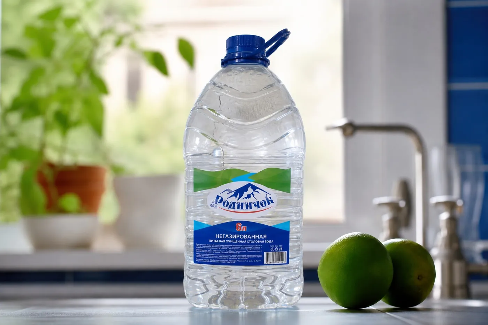
Чистота гор в каждой капле. Вода, соки, лимонады и консервация, созданные под солнцем Таджикистана.
Листайте— О нас
Мы берём воду 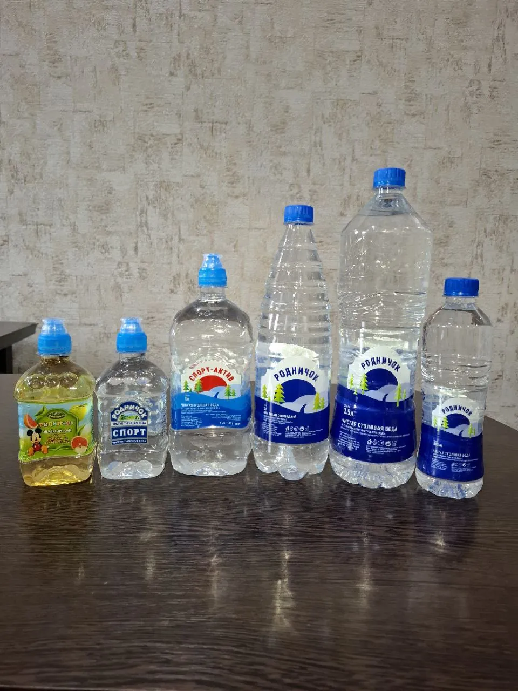 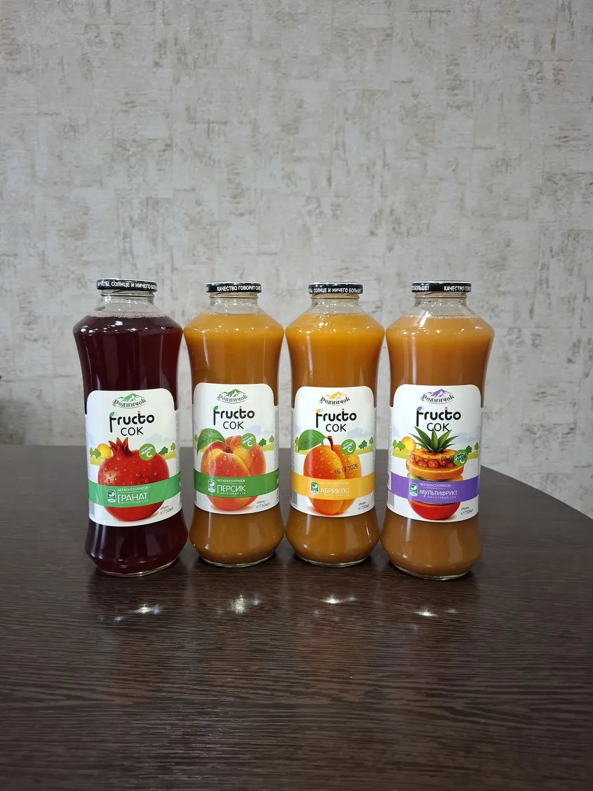 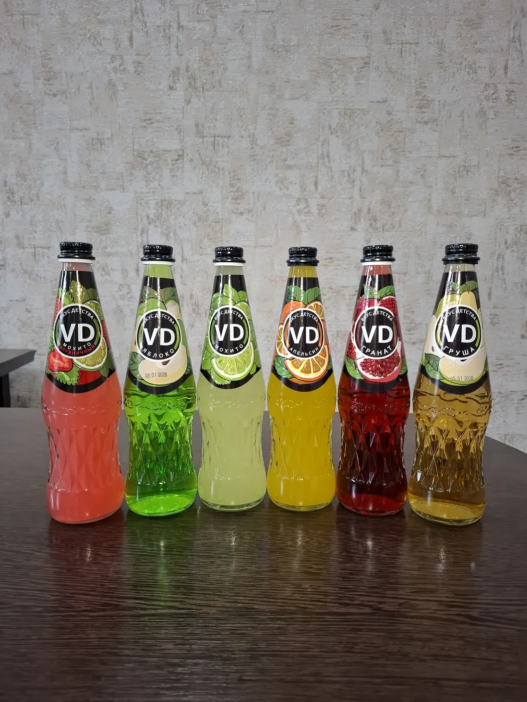 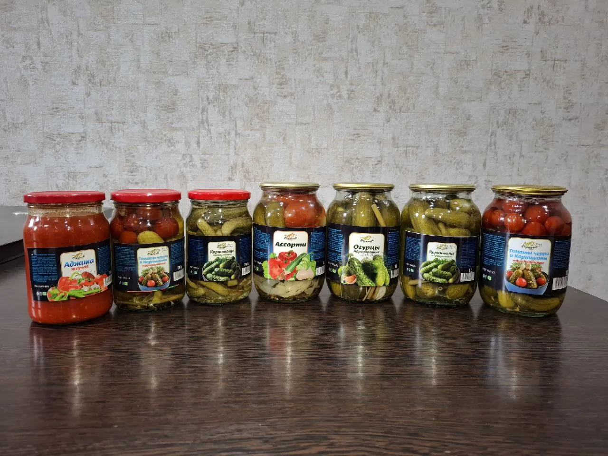
— Наши линейки
Питьевая очищенная столовая вода
Негазированная вода для всей семьи: от компактной бутылки в спортзал до шестилитровой бутыли для кухни.
Фруктовый сок · 750 мл
Сок без концентратов, с витамином C. «Фрукты, солнце и ничего больше!» — написано прямо на крышке.
Сильногазированный лимонад
Хрустальное стекло, яркие пузырьки и тот самый вкус, который помнят с детства.
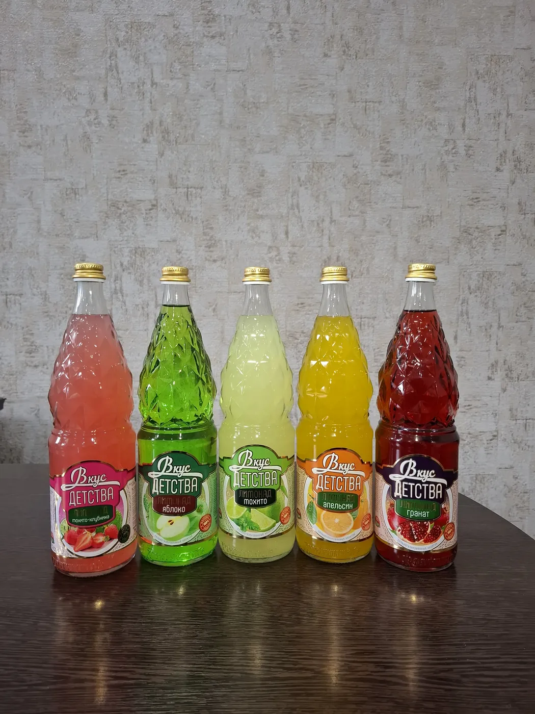
«Вкус детства» в новом формате
Дерзкий дизайн, удобная бутылка и шесть вкусов для тех, кто всегда в движении.
Соки и нектары в кувшинах
Семь вкусов в узнаваемом стеклянном кувшине с ручкой, чтобы ставить на стол.
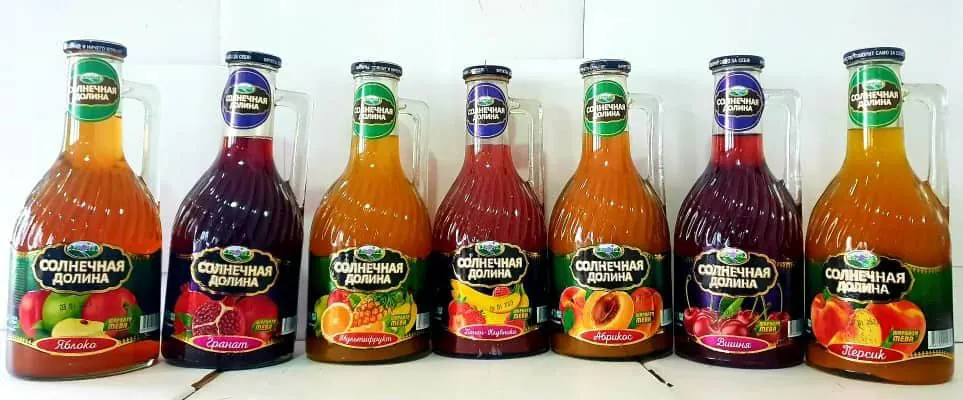
Овощи по домашним рецептам
Хрустящие корнишоны, сочные томаты и острая аджика, как из бабушкиного погреба.
— Путь капли
Всё начинается с чистой воды. Горы Таджикистана — наше главное богатство.
Многоступенчатая очистка превращает воду в питьевую столовую воду «Родничок».
Абрикосы, персики, гранаты и овощи из плодородной Согдийской долины.
Вода в ПЭТ, соки и лимонады в стекло. Каждая бутылка и банка под контролем.
От Паласа до магазинов по всей стране: свежо, вкусно и по-честному.
брендовых линеек
вкусов и видов продукции
«Бренд года» Таджикистана
сок без концентратов в Fructo
— Признание
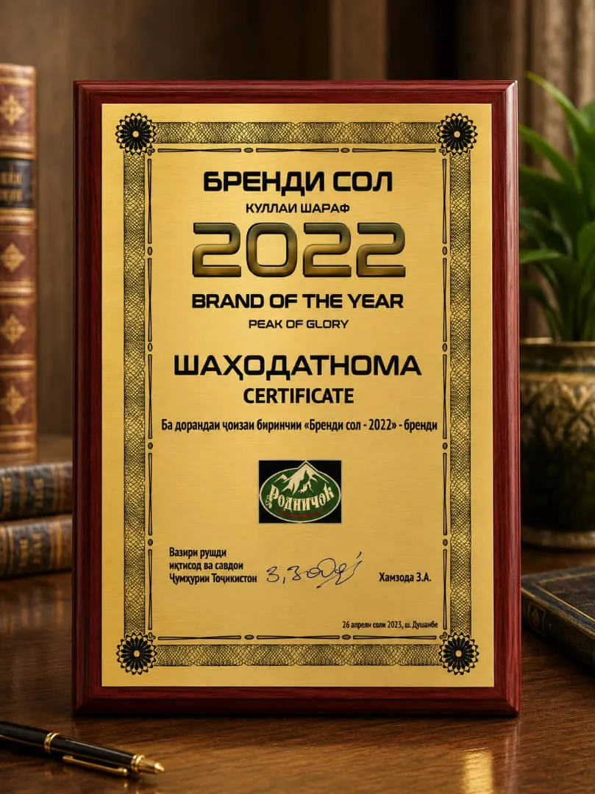
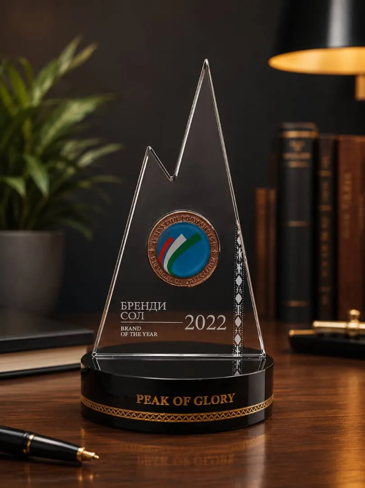
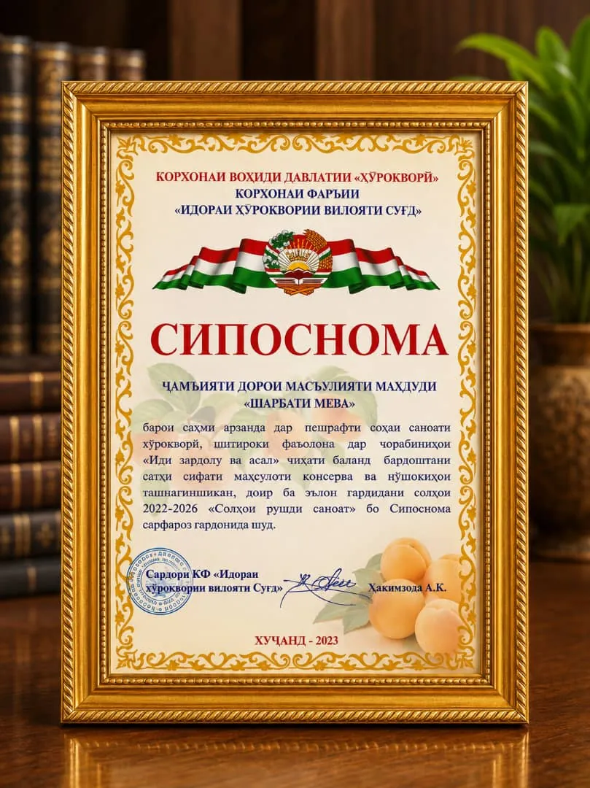
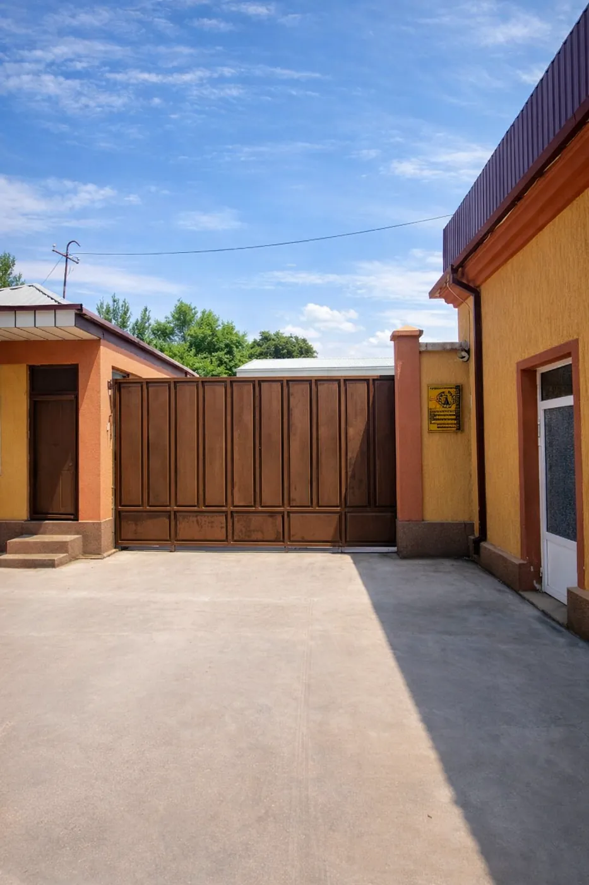
— Производство
Собственное производство ООО «Шарбати Мева»: розлив воды, соков и лимонадов, консервирование овощей. Открыты для дистрибьюторов, магазинов и HoReCa.
— Сотрудничество